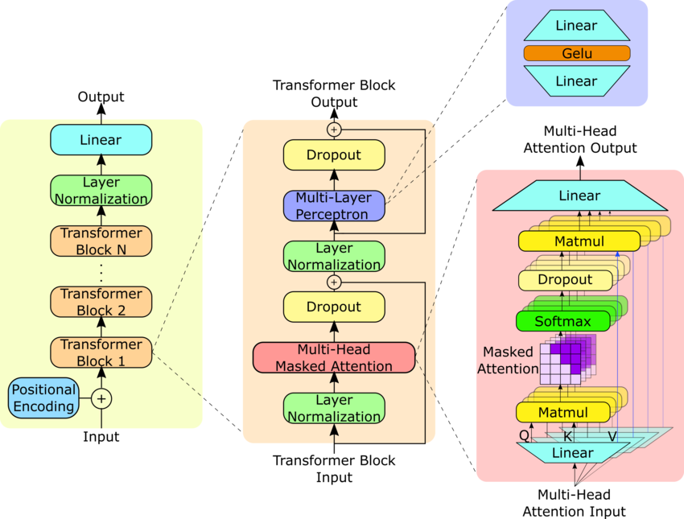
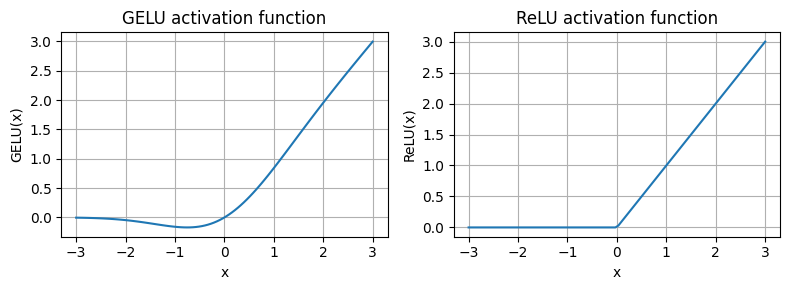

动手搭建GPT2架构-大模型炼丹术(四)
在前面的3篇文章中，我们已经讲解了训练LLM所需的tokenizer，token/position编码，以及Transformer核心：注意力机制。现在是时候动手搭建GPT的网络架构了。
本文首先搭建GPT架构包含的🧍各个小组件，然后将这些组件串联起来，得到最终的GPT架构。
下图左侧是整个GPT2的架构图，中间是Transformer Block，右侧是我们之前实现的多头注意力层。

我们要搭建的是GPT-2，具有124M的参数量，相关的配置文件先放这儿：
1 | GPT_CONFIG_124M = { |
一、Layer Normalization
1.1 Layer Norm的计算公式
假设某个输入X的batch_size=2，token长度是3，$d_{model}$(embedding)的维度是4，如下：
1 | # 定义输入张量 X，形状为 (batch_size=2, seq_len=3, d_model=4) |
接下来以第一个batch为例，讲解LayerNorm层的计算逻辑。
1.1.1 计算均值
LayerNorm 对每个 token（每一行）计算均值：
$$
\mu_i = \frac{1}{d_{\text{model}}} \sum_{j=1}^{d_{\text{model}}} X_{i,j}
$$
计算每一行的均值：
$$
\mu_1 = \frac{1+2+3+4}{4} = \frac{10}{4} = 2.5
$$
$$
\mu_2 = \frac{5+6+7+8}{4} = \frac{26}{4} = 6.5
$$
$$
\mu_3 = \frac{9+10+11+12}{4} = \frac{42}{4} = 10.5
$$
所以均值向量为：
$$
\mu =
\begin{bmatrix}
2.5 \
6.5 \
10.5
\end{bmatrix}
$$
1.1.2 计算方差
方差计算公式：
$$
\sigma^2_i = \frac{1}{d_{\text{model}}} \sum_{j=1}^{d_{\text{model}}} (X_{i,j} - \mu_i)^2
$$
计算每一行的方差：
$$
\sigma^2_1 = \frac{(1-2.5)^2 + (2-2.5)^2 + (3-2.5)^2 + (4-2.5)^2}{4}
= \frac{2.25 + 0.25 + 0.25 + 2.25}{4} = \frac{5}{4} = 1.25
$$
$$
\sigma^2_2 = \frac{(5-6.5)^2 + (6-6.5)^2 + (7-6.5)^2 + (8-6.5)^2}{4}
= \frac{2.25 + 0.25 + 0.25 + 2.25}{4} = 1.25
$$
$$
\sigma^2_3 = \frac{(9-10.5)^2 + (10-10.5)^2 + (11-10.5)^2 + (12-10.5)^2}{4}
= \frac{2.25 + 0.25 + 0.25 + 2.25}{4} = 1.25
$$
所以方差向量为：
$$
\sigma^2 =
\begin{bmatrix}
1.25 \
1.25 \
1.25
\end{bmatrix}
$$
1.1.3 归一化计算
归一化计算公式：
$$
\hat{X}{i,j} = \frac{X{i,j} - \mu_i}{\sqrt{\sigma^2_i + \epsilon}}
$$
假设 ( \epsilon = 10^{-5} )，计算标准化后的值：
$$
\hat{X} =
\begin{bmatrix}
\frac{1-2.5}{\sqrt{1.25+10^{-5}}} & \frac{2-2.5}{\sqrt{1.25+10^{-5}}} & \frac{3-2.5}{\sqrt{1.25+10^{-5}}} & \frac{4-2.5}{\sqrt{1.25+10^{-5}}} \
\frac{5-6.5}{\sqrt{1.25+10^{-5}}} & \frac{6-6.5}{\sqrt{1.25+10^{-5}}} & \frac{7-6.5}{\sqrt{1.25+10^{-5}}} & \frac{8-6.5}{\sqrt{1.25+10^{-5}}} \
\frac{9-10.5}{\sqrt{1.25+10^{-5}}} & \frac{10-10.5}{\sqrt{1.25+10^{-5}}} & \frac{11-10.5}{\sqrt{1.25+10^{-5}}} & \frac{12-10.5}{\sqrt{1.25+10^{-5}}}
\end{bmatrix}
$$
$$
\approx
\begin{bmatrix}
-1.34 & -0.45 & 0.45 & 1.34 \
-1.34 & -0.45 & 0.45 & 1.34 \
-1.34 & -0.45 & 0.45 & 1.34
\end{bmatrix}
$$
1.1.4 线性变换（可学习参数）
LayerNorm 通常有两个可训练参数 ( \gamma )（缩放因子） 和 ( \beta )（偏移量），计算公式为：
$$
Y = \gamma \hat{X} + \beta
$$
假设：
$$
\gamma = [1.0, 1.0, 1.0, 1.0], \quad \beta = [0.0, 0.0, 0.0, 0.0]
$$
最终的输出：
$$
Y =
\begin{bmatrix}
-1.34 & -0.45 & 0.45 & 1.34 \
-1.34 & -0.45 & 0.45 & 1.34 \
-1.34 & -0.45 & 0.45 & 1.34
\end{bmatrix}
$$
以上便是第一个batch的LayerNorm计算过程，第二个batch同理。可以看到，LayerNorm是对每一个batch的每一个token对应的$d_{model}$维度上进行的，与batch维度无关。
1.2 Transformer中为什么不使用BatchnNorm？
在做图像相关任务时，经常使用Batch Normalization，为什么Transformer中使用的却是Layer Normalization呢？
Batch Normalization (BN) 计算的是 batch 维度的均值和方差：
$$
\mu_B = \frac{1}{N} \sum_{i=1}^{N} X_i, \quad \sigma^2_B = \frac{1}{N} \sum_{i=1}^{N} (X_i - \mu_B)^2
$$其中，( N ) 是 batch 内的样本数，所以它对 batch 之间的分布很敏感。
Layer Normalization (LN) 计算的是 每个 token 内的均值和方差（对 embedding 维度归一化）：
$$
\mu_L = \frac{1}{d} \sum_{j=1}^{d} X_j, \quad \sigma^2_L = \frac{1}{d} \sum_{j=1}^{d} (X_j - \mu_L)^2
$$其中，( d ) 是 embedding 维度，即 LN 只依赖于 当前样本自身的信息，不受 batch 影响。
直观理解：
- BN 在图像任务中更常见，因为图像数据通常是 NCHW（batch, channel, height, width） 格式，BN 可以在 batch 维度进行统计计算。
- LN 在 NLP、Transformer 结构中更合适，因为 序列任务的输入长度不定，且批次大小可能变化，BN 计算的统计量会不稳定。
1.3 Layer Normalization的代码实现
直接将上述的LayerNorm的数学公式用代码实现即可：
1 | import torch.nn as nn |
实例化测试一下：
1 | batch_example = torch.randn(2, 3, 4) |
上面是我们手写的代码。当然，PyTorch中也封装了现成的LayerNorm层，直接调用即可：
1 | layer_norm = torch.nn.LayerNorm(emb_dim) |
二、Feed Forward
Feed Forward包括两个线性层和1个GELU激活函数。
2.1 GELU详解
相较于ReLU来说，GELU激活函数具有平滑的性质，因而可以帮助模型更好地学习到非线性关系，且不会像 ReLU 那样因为负输入而使信息完全丢失。

GELU 激活函数的数学表达式为：
$$
GELU(x) = 0.5 * x * (1 + tanh( √(2/π) * (x + 0.044715 * x^3) ))$$
或者通过高斯误差函数（Error Function, erf）来表示：
$$GELU(x) = 0.5 * x * (1 + erf(x / √2))$$
根据数学表达式来代码实现GELU：
1 | class GELU(nn.Module): |
2.2 Feed Forward的代码实现
1 | class FeedForward(nn.Module): |
实例化测试一下：
1 | ffn = FeedForward(GPT_CONFIG_124M) |
三、残差连接
残差连接的概念是在CV中提出来的。在深度神经网络中，随着网络层数的加深，梯度可能会在反向传播过程中消失，使得网络的训练变得困难。残差连接允许信息直接流向更深层的网络，而不需要经过每一层的变换，这有助于保留梯度的流动，从而缓解梯度消失问题。换句话说，残差连接通过提供“捷径”路径，确保梯度在训练过程中能够有效传播。
为了进一步说明残差连接对于梯度的影响，这里写一些代码来验证。
首先来定义一个简单的深度神经网络：
1 | class ExampleDeepNeuralNetwork(nn.Module): |
写一些工具函数，用于查看反向传播时中间层的梯度信息：
1 | def print_gradients(model, x): |
不使用残差连接，查看梯度：
1 | layer_sizes = [3, 3, 3, 3, 3, 1] |
输出：
1 | layers.0.0.weight has gradient mean of 0.00020173587836325169 |
不使用残差连接，查看梯度：
1 | torch.manual_seed(123) |
输出：
1 | layers.0.0.weight has gradient mean of 0.22169792652130127 |
使用残差连接后，即使是最靠近输入的网络层的梯度仍维持在0.22左右，远大于不使用残差连接的时0.00002。
在我们要实现的GPT-2架构中，主要有两个部分用到了残差连接：
1）自注意力层的残差连接
2）前馈网络的残差连接
这些将体现在后面的代码中，请继续往下看。
四、编写Transformer Block
有了前面三部分的组件，就可以将它们合起来构建Transformer Block了。
现在来代码实现中间的Transformer Block：
1 | class TransformerBlock(nn.Module): |
实例化测试一下：
1 | import torch |
五、编写整个GPT2架构
本小节将实现左图的GPT2架构
现在所有组件都有了，直接根据上面左侧的架构图串联起来就好了：
1 | class GPTModel(nn.Module): |
实例化测试：
1 | torch.manual_seed(123) |
到这里，我们完成了整个GPT2架构的搭建。
六、使用GPT进行逐个token预测
在使用类似ChatGPT等LLM时，生成的对话是一种形如打字机效果来展示的，事实上，LLM在推理过程中也是自回归地逐个token预测的，这与其 Transformer Decoder 结构和 因果注意力（Causal Attention） 机制有关。
预测下一个单词的函数代码如下：
1 | def generate_text_simple(model, idx, max_new_tokens, context_size): |
原来很简单，假设初始的输入token序列长度是4，每预测一个token，就把预测得到的token拼接在初始token后面，作为新的输入token序列。
来实例化测试一下。
首先使用tokenizer将已有文本start_context编码到token id的形式
1 | start_context = "Hello, I am" |
输出：
1 | encoded: [15496, 11, 314, 716] |
然后调用上面的生成函数generate_text_simple，开始自回归地预测下一个单词
1 | model.eval() #A |
输出：
1 | Output: tensor([[15496, 11, 314, 716, 27018, 24086, 47843, 30961, 42348, 7267]]) |
预测完成后，使用tokenizer的decode方法，将预测的token还原成文本：
1 | decoded_text = tokenizer.decode(out.squeeze(0).tolist()) |
可以看到，模型的预测已经被解码成文本的形式，但是你会发现，虽然已经拿到了预测结果，读起来却明显是不通顺的。
这是因为模型还没有经过训练，我们当前测试的GPT2的权重是随机初始化的。在接下来的文章中，我们将介绍如何对GPT2进行训练，以生成有意义的可读文本，并通过一系列技术手段进行逐步优化，欢迎持续关注。